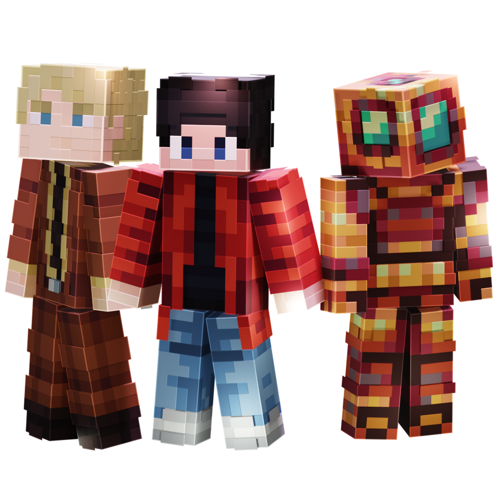

Приватный сервер Minecraft: Java Edition
Создай свою собственную
звёздную историю
Astrum — это не просто сервер. Это мир, где каждое ваше действие влияет на вселенную. Присоединяйтесь к сплочённому сообществу и начните своё приключение.

Почему Astrum?
Ключевые особенности нашего мира
Ивенты
На сервере постоянно проходят разные интересные ивенты для всех игроков.
РП и Правительство
На сервере есть политические структуры: от министров до Парламента.
Анти-чит и защита
Наслаждайтесь честной игрой благодаря нашей надёжной системе защиты.
Дружное сообщество
Станьте частью активного и дружелюбного комьюнити игроков.
Ответы на вопросы
Когда был вайп?
8 сезон начался 14 июня 2025 г.
Когда новый сезон?
Мы предпреждаем о новом сезоне не сильно заранее до вайпа.
Сколько длится сезон?
Последние сезоны сервера идут примерно по году.
Присоединяйтесь к нашему Discord
Для игры на сервере обязательно состоять в нашем Discord-сервере. Через него проходит вся коммуникация между игроками и связь с администрацией.